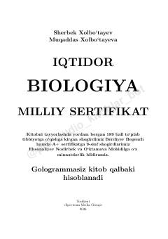

NIBiologiya fanidan milliy sertifikat imtihonlari uchun testlar to'plami.
Ushbu kitob biologiya fanidan milliy sertifikat imtihonlariga tayyorlanayotgan abituriyentlar uchun mo'ljallangan testlar to'plamidir. Unda biologiyaning turli sohalariga oid murakkab test savollari va ularning tahlillari keltirilgan.